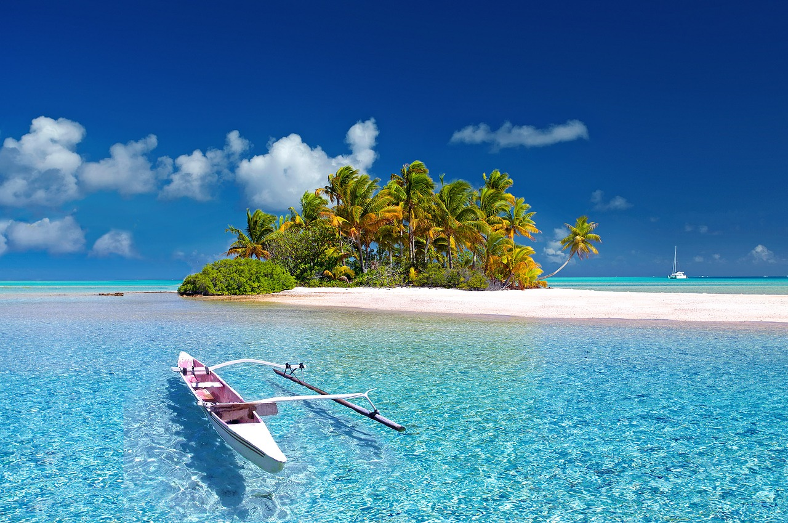

Un parque de atracciones o parque de diversiones (a veces llamado feria) es un grupo de atracciones de entretenimiento, para montarse y otros acontecimientos en un sitio para el disfrute de un gran número de personas. Los parques de atracciones tienen una ubicación fija, al contrario que las ferias y los carnavales ambulantes, y están más elaborados que los simples parques de ciudad o parques infantiles, por lo general ofrecen atracciones destinadas a atender específicamente a ciertos grupos de edad, así como algunos que están dirigidos a todas las edades. Los parques temáticos, un tipo específico de parques de atracciones, normalmente están mucho más intrincadamente dedicados a cierto tema o grupo de temas que los parques de atracciones normales.
Los términos parque temático y parque de atracciones son a menudo sinónimos. Sin embargo, un parque temático es considerado un estilo distinto de parque de atracciones. Un parque temático tiene paisajismo, edificios y atracciones que están basadas en uno o más temas específicos o historias. A pesar de muchos parques más antiguos añadiendo distracciones y áreas temáticas, calificando el parque como parque temático, el primer parque construido con la intención original de promover un tema específico, Santa Claus Land, en Santa Claus, Indiana, no abrió hasta 1946. Disneyland Park, ubicado en Anaheim, California, construido alrededor del concepto de encapsular múltiples parques temáticos en un solo parque de atracciones es a menudo erróneamente mencionado como el primer parque temático, pero tan solo es el parque que hizo la idea popular.
Walt Disney World Resort, comúnmente llamado Walt Disney World o Disney World, es un complejo turístico famoso por sus parques temáticos y numerosos hoteles. El complejo es operado por una división de la compañía Disney, que es la propietaria. Está localizado en la zona de Lake Buena Vista y Bay Lake en Florida.
La construcción empezó en 1967, menos de un año después de la muerte de Walt Disney. El 1 de octubre de 1971, abrió sus puertas el parque conocido como Magic Kingdom; luego se añadieron al complejo los parques temáticos Epcot, Disney's Hollywood Studios y Disney's Animal Kingdom.
Además de los cuatro parques temáticos principales, el complejo cuenta con dos parques acuáticos, seis circuitos de golf, un complejo deportivo, dos centros comerciales, veinticuatro hoteles de Disney, numerosas tiendas, y restaurantes. El área total de la propiedad tiene 12.000 hectáreas (como la ciudad de San Francisco) y es el complejo de parques temáticos más grande del mundo, a pesar de que en la última década se han vendido grandes extensiones de terreno para conjuntos residenciales y otros proyectos, incluyendo el terreno ahora ocupado por la ciudad de Celebration, construida y administrada por Disney.
El autor es la persona que crea una obra, sea artística, literaria o científica. El autor no solo crea, también, puede cambiar alguna obra. En la literatura, el autor es una noción que pertenece al sistema literario, así como las nociones de lector, editor y obra literaria. El término proviene del latín auctor, -ōris, "aumentador, productor, creador, autor, padre, abuelo, antepasado, fundador".
© Derechos Reservados